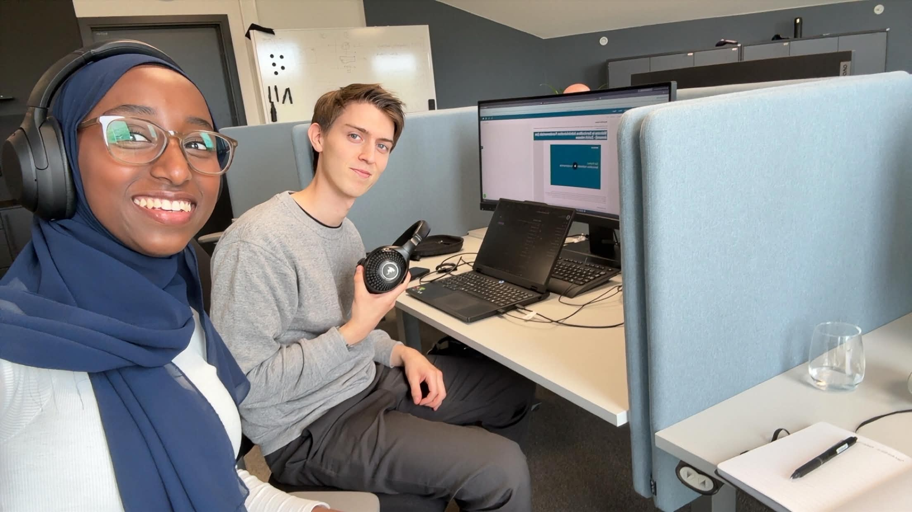

01
I dag har vi hatt første dag hos KPMG. Dagen startet med en liten runde på kontoret. Etter å ha truffet mange hyggelig mennesker tok vi turen inn på møterommet for å få litt informasjon om oppstart. Etter lunsj startet vi onboarding prosessen i ServiceNow. Etter noen kurs videoer ble det kake. Noen ansatte i KPMG hadde landet en kontrakt som måtte feires. Ettermiddagen ble fylt med litt mer opplæringsvideoer, og deretter god mat og gode samtaler på Flua Pizza. God start på praksisen!
